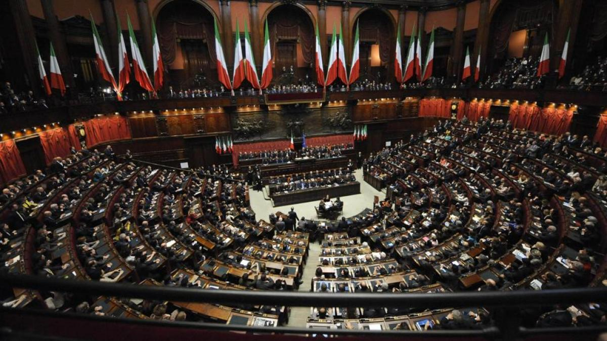

<!DOCTYPE html>
<html lang="es">

<head>
    <meta charset="UTF-8">
    <meta http-equiv="X-UA-Compatible" content="IE=edge">
    <meta name="viewport" content="width=device-width, initial-scale=1.0">
    <!-- Bootstrap-->
    <link href="https://cdn.jsdelivr.net/npm/bootstrap@5.1.3/dist/css/bootstrap.min.css" rel="stylesheet"
        integrity="sha384-1BmE4kWBq78iYhFldvKuhfTAU6auU8tT94WrHftjDbrCEXSU1oBoqyl2QvZ6jIW3" crossorigin="anonymous">
    <!-- Font awesome -->
    <script src="https://kit.fontawesome.com/c15cb0b06c.js" crossorigin="anonymous"></script>
    <!-- Google Fonts -->
    <link href="https://fonts.googleapis.com/css2?family=Archivo:wght@500&display=swap" rel="stylesheet">
    <!-- CSS -->
    <link rel="stylesheet" href="../css/estilos.css">
    <!--Título -->
    <title>Il Paradiso</title>
</head>

</html>

<body>


    <!-- Comienzo del header -->
    <header>
        <nav class="navbar navbar-expand-lg navbar-light">
            <div class="container-fluid">
                <div class="logo">
                    
                </div>
                <button class="navbar-toggler" type="button" data-bs-toggle="collapse"
                    data-bs-target="#navbarNavAltMarkup" aria-controls="navbarNavAltMarkup" aria-expanded="false"
                    aria-label="Toggle navigation">
                    <span class="navbar-toggler-icon"></span>
                </button>
                <div class="collapse navbar-collapse" id="navbarNavAltMarkup">
                    <div class="navbar-nav">
                        <a class="nav-link active" aria-current="page" href="../index.html">Inicio</a>
                        <a class="nav-link" href="lugares.html"> Lugares turísticos</a>
                        <a class="nav-link" href="hoteles.html">Hoteles</a>
                        <a class="nav-link" href="datos.html"> Datos generales </a>
                        <a class="nav-link" href="gobierno.html"> Gobierno</a>
                    </div>
                </div>
            </div>
        </nav>
    </header>

    <!-- Main -->
    <div class="background_image--gob">
        <h1 class="titulos">GOBIERNO</h1>
        <ol class="breadcrumb">
            <li>
                <a class="inicio" href="../index.html">Inicio</a>
            </li>
            <li class="active_1">Gobierno</li>
        </ol>
    </div>


    <!-- Sección -->
    <div class="clearfix texto__gobierno">
        <p>
            La política se basa en una república parlamentaria democrática representativa. El <strong>poder
                ejecutivo</strong> está en
            manos del Consejo de Ministros son liderados por él, y es uno de los cinco cargos más importantes del país,
            junto con el Presidente de la República, el Presidente del Senado de la República y el Presidente de la
            Cámara de Diputados y del Tribunal Constitucional.
            El <strong>poder legislativo</strong> recae en el Parlamento y el Consejo de Ministros. El <strong>poder
                judicial</strong> es independiente de
            los órganos ejecutivo y legislativo. Además, es un sistema multipartidista.
        </p>
        
        <br>
        <div class="linea">
            <h2 class="subtitulo">Fuerza armadas</h2>
        </div>
        <br>
        <p>
            Las fuerzas armadas italianas están compuestas por el ejército, la marina, la aviación y la gendarmería,
            todos bajo el Consejo Supremo de Defensa presidido por el Presidente de la República Italiana. El servicio
            militar en el país es totalmente voluntario desde 2005.
            Italia es la tercera potencia militar más grande de Europa después de Francia y el Reino Unido, y la cuarta
            potencia militar más grande de Europa después de Francia, el Reino Unido y Alemania en términos de gasto
            militar.
            El ejército italiano es una fuerza militar terrestre que consta de 105.062 efectivos en 2012. Su principal
            material de combate son los vehículos de combate de infantería Dardo, los cazacarros Centauro, los tanques
            Ariete o los helicópteros de ataque Mangusta desplegados en misiones de la ONU.
        </p>
    </div>


    <!-- Footer -->
    <footer>
        <ul class="d-flex justify-content-center">
            <li>
                <a href="https://www.facebook.com" target="_blank" alt="Logo de Facebook" class="facebook">
                    <i class="fab fa-facebook-f"></i>
                </a>
            </li>
            <li>
                <a href="https://www.twitter.com" target="_blank" alt="Logo de Twitter" class="twitter">
                    <i class="fab fa-twitter"></i>
                </a>
            </li>
            <li>
                <a href="https://www.instagram.com" target="_blank" alt="Logo de Instagram" class="instagram">
                    <i class="fab fa-instagram"></i>
                </a>
            </li>
            <li>
                <a href="https://www.youtube.com" target="_blank" alt="Logo de YouTube" class="youtube">
                    <i class="fab fa-youtube"></i>
                </a>
            </li>
        </ul>
        <p class="footer"> Copyright 2022 &nbsp; &nbsp; | &nbsp; &nbsp; Todos los derechos reservados</p>
    </footer>


    <!-- Bootstrap-->
    <script src="https://cdn.jsdelivr.net/npm/@popperjs/core@2.10.2/dist/umd/popper.min.js"
        integrity="sha384-7+zCNj/IqJ95wo16oMtfsKbZ9ccEh31eOz1HGyDuCQ6wgnyJNSYdrPa03rtR1zdB" crossorigin="anonymous">
    </script>
    <script src="https://cdn.jsdelivr.net/npm/bootstrap@5.1.3/dist/js/bootstrap.min.js"
        integrity="sha384-QJHtvGhmr9XOIpI6YVutG+2QOK9T+ZnN4kzFN1RtK3zEFEIsxhlmWl5/YESvpZ13" crossorigin="anonymous">
    </script>


</body>